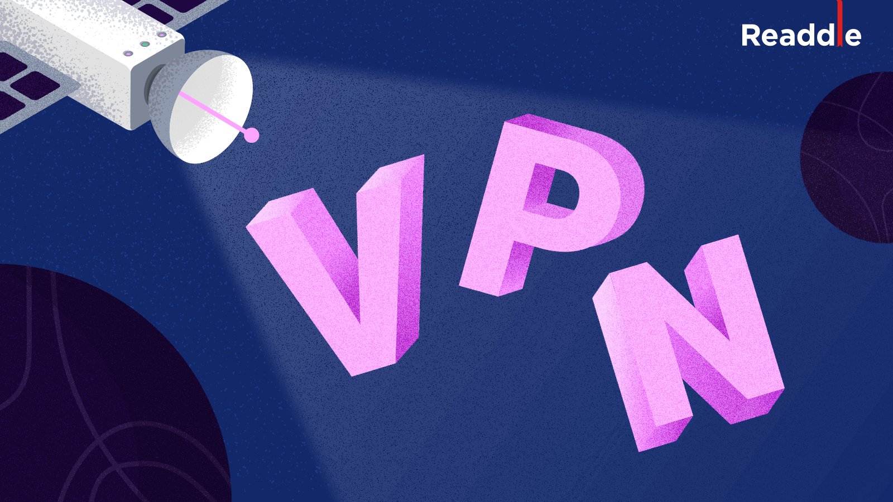

Lời cảm ơn
Để hoàn thành bài tiểu luận môn Dịch vụ mạng Internet với đề tài tìm hiểu về công nghệ VPN,
Nhóm em xin gửi lời cảm ơn chân thành đến giảng viên bộ môn, ThS. Lê Hoàng Son.
Những kiến thức và sự định hướng sát sao của thầy trong suốt học phần đã giúp nhóm em có cái nhìn sâu sắc hơn về các dịch vụ mạng hiện đại từ đó làm nền tảng để triển khai bài nghiên cứu này.
Trong quá trình thực hiện, dù đã cố gắng tìm hiểu và trau dồi tài liệu nhưng bài tiểu luận khó tránh khỏi những thiếu sót nhất định.
Nhóm em rất mong nhận được những góp ý từ thầy để bài làm được hoàn thiện hơn.
Danh mục chương
|

Chương 1: Khái niệm VPNVPN là gì? Tìm hiểu cách VPN mã hóa dữ liệu, ẩn IP và bảo vệ bạn khi truy cập Internet. |
Chương 2: Thành phần của VPNThành phần VPN gồm những gì? Tìm hiểu Client, Server, Tunnel và giao thức bảo mật. |
|
 Chương 3: Nguyên lý hoạt động của VPNVPN hoạt động thế nào? Tìm hiểu cơ chế của VPN. |
Chương 4: Các dạng kết nối của VPNTìm hiểu Remote Access và Site-to-Site cùng cách ứng dụng thực tế. |
Chương 5: Ưu, Nhược điểm của VPNƯu nhược điểm của VPN là gì? Khám phá lợi ích bảo mật và những hạn chế cần lưu ý. |
Chương 6: Ứng dụng của VPNTìm hiểu Remote Access và Site-to-Site cùng cách ứng dụng thực tế. |
|